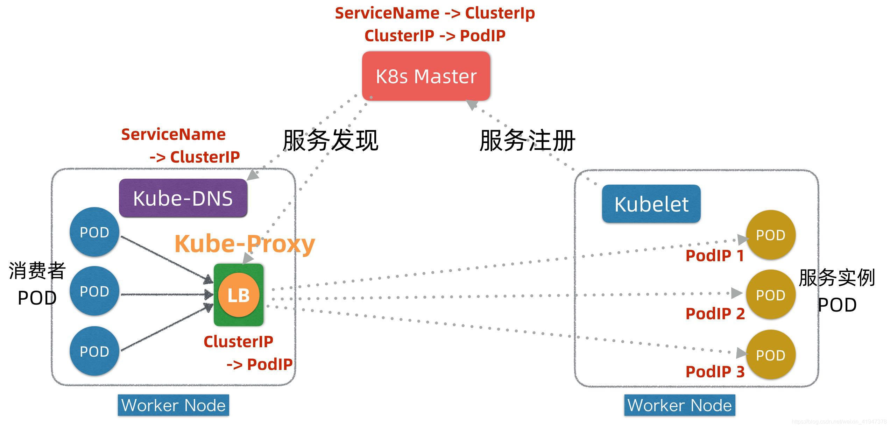
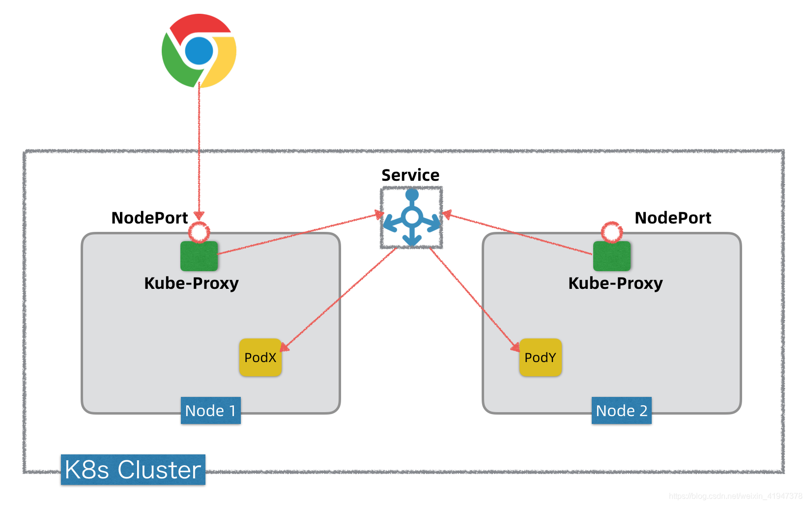
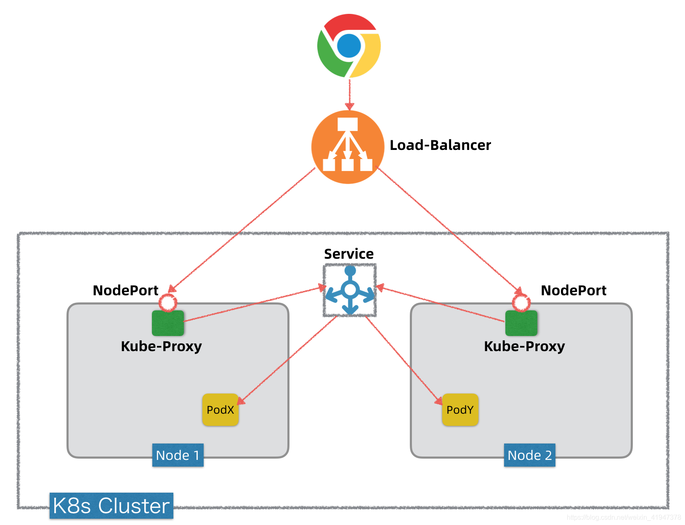
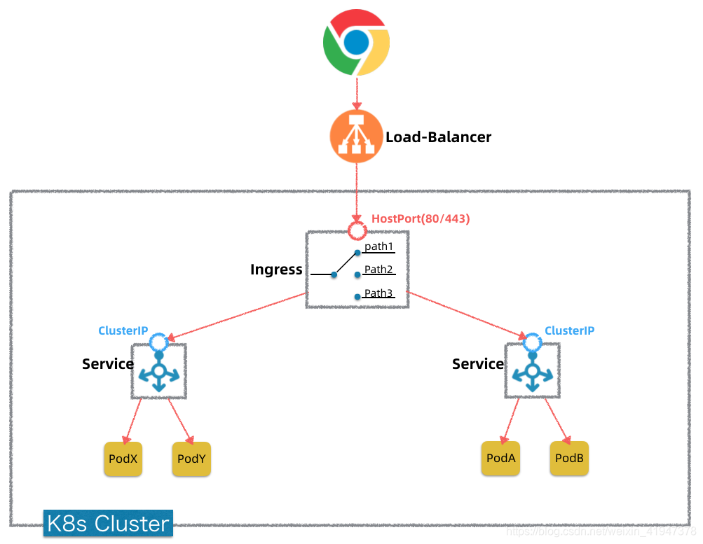
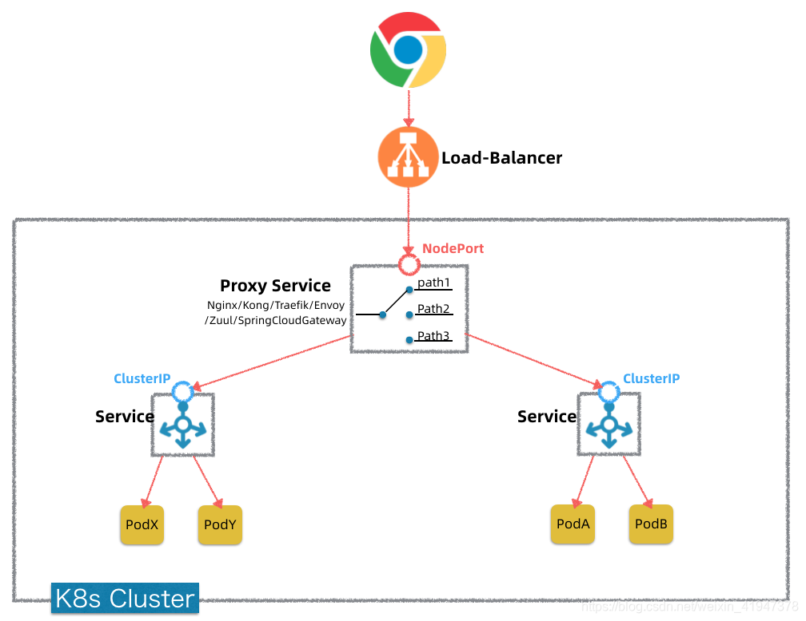
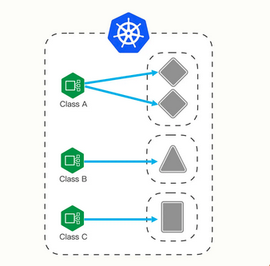

Kubernetes 的主要功能
主要功能包括:
- 基于容器的应用部署、维护和滚动升级
- 负载均衡和服务发现
- 跨机器和跨地区的集群调度
- 自动伸缩
- 无状态服务和有状态服务
- 广泛的 Volume 支持
- 插件机制保证扩展性
一 Master 和 Node 节点
-
Master 负责管理整个集群。 Master 协调集群中的所有活动，例如调度应用、维护应用的所需状态、应用扩容以及推出新的更新。
-
Node 是一个虚拟机或者物理机，它在 Kubernetes 集群中充当工作机器的角色 每个 Node 都有 Kubelet , 它管理 Node 而且是 Node 与 Master 通信的代理。 Node 还应该具有用于处理容器操作的工具，例如 Docker 或 rkt 。处理生产级流量的 Kubernetes 集群至少应具有三个 Node 。
二 Pod
-
A Pod is the basic execution unit of a Kubernetes application. Each Pod represents a part of a workload that is running on your cluster.
-
pod ,是集群内的一个最小的运行实例、最小的调度单位。 一个 pod 是典型的可多常一概念，一个 pod 里可以运行多个 docker 容器, 但实际应用中，常常是一个 pod 运行一个 docker 容器
-
Pod 是一组紧密关联的容器集合，支持多个容器在一个 Pod 中共享网络和文件系统，可以通过进程间通信和文件共享这种简单高效的方式完成服务。Pod 是 Kubernetes 调度的基本单位，Pod 的设计理念是
每个 Pod 都有一个唯一的 IP。
1 Pod 具有如下特征：
- 包含多个共享 IPC、Network 和 UTC Namespace 的容器，可直接通过 Localhost 通信
- 所有 Pod 内容器都可以访问共享的 Volume，可以访问共享数据
- 优雅终止：Pod 删除的时候先给其内的进程发送 SIGTERM，等待一段时间 (Grace Period) 后才强制停止依然还在运行的进程
- 特权容器 (通过 SecurityContext 配置) 具有改变系统配置的权限 ( 在网络插件中大量应用 )
- 支持三种重启策略（restartPolicy），分别是：Always、OnFailure、Never
- 支持三种镜像拉取策略（imagePullPolicy ），分别是：Always、Never、IfNotPresent
- 资源限制，Kubernetes 通过 CGroup 限制容器的 CPU 以及内存等资源，可以设置 Request 以及 Limit 值
- 健康检查，提供两种健康检查探针，分别是 LivenessProbe 和 RedinessProbe。前者用于探测容器是否存活，如果探测失败，则根据重启策略进行重启操作。后者用于检查容器状态是否正常，如果检查容器状态不正常，则请求不会到达该 Pod
- Init Container 在所有容器运行之前执行，常用来初始化配置
- 容器生命周期钩子函数，用于监听容器生命周期的特定事件，并在事件发生时执行已注册的回调函数，支持两种钩子函数：postStart 和 preStop，前者是在容器启动后执行，后者是在容器停止前执行
2 Init Containers
- 1 一个 Pod 可以由多个 App Container 和一个或者多个 Init Container
- 2 Init Container 和 App Container 区别:
-
- 2.1 Init Container 的目标就是运行到正常结束. 如果一个 Init Container 没有运行到正常结束, 默认情况下 Kubelet 会不停地重启该 Pod.
-
- 2.2 如果有多个 Init Container, 则必须前一个运行完成, 才能启动下一个.
- 3 Init Container 应用场景(主要还是通用类、运维类操作集成到一起, 和业务进行分割):
-
- 3.1 探测依赖服务(下游)是否已经 Ready
-
- 3.2 向服务中心注册本 Pod
2.1 Pause 容器
pause 容器，检查 Kubernetes 集群各 node 节点的时候（docker ps | grep pause）会发现每个 node 上都运行了很多的 pause 容器 K8s 中的 pause 容器主要为每个业务容器提供以下功能：
- 在 Pod 中担任 linux 命名空间共享的基础
- 启动 Pid 命名空间，开启 init 进程
- pause 容器对应的镜像属于 k8s 平台的一部分
3 Container
3.1 Image 拉取策略
-
IfNotPresent
-
- the image is pulled only if it is not already present locally.
-
Always
-
- every time the kubelet launches a container, the kubelet queries the container image registry to resolve the name to an image digest. If the kubelet has a container image with that exact digest cached locally, the kubelet uses its cached image; otherwise, the kubelet pulls the image with the resolved digest, and uses that image to launch the container.
-
Never
-
- the kubelet does not try fetching the image. If the image is somehow already present locally, the kubelet attempts to start the container; otherwise, startup fails.
3.2 Container 生命周期勾子
- PostStart
-
PreStop
3.3 关于 termination message
1 为什么需要 termination message？
- 当 Pod 异常退出时, 我们需要加速问题定位. 因此需要专门的 termination message, 直接从 container 这边传递给 Kubectl 命令
2 怎么读和写 termination message
4 Pod and Container 日志
三 Node
- Node 是 Pod 运行的载体、可以是物理机 、也可以是虚拟机 . Node 本质上不是 Kubernetes 来创建的， Kubernetes 只是管理 Node 上的资源。为了管理 Pod，每个 Node 节点上至少需要运行
Container Runtime（Docker）、Kubelet和Kube-proxy服务。
1 Pod 选择 Node 时常用的 2 大类技能
- Node Selector(根据宿主机标签,选择合适的宿主机)
-
- Node 节点常用的操作是，可以设置调度和不可调度.
- Taint(污点)
-
- 使用 kubectl taint 命令可以给某个 Node 节点设置污点，Node 被设置上污点之后就和 Pod 之间存在了一种相斥的关系，可以让 Node 拒绝 Pod 的调度执行，甚至将 Node 已经存在的 Pod 驱逐出去。每个污点的组成：key=value:effect
2 Node 常用操作
- 获取 Node 标签:
kubectl get node --show-labels=true
四 Namespace（命名空间）
Kubernetes 中对一组资源和对象的抽象集合，比如可以用来将系统内部的对象划分为不同的项目组或者用户组。常见的 Pod、Service、ReplicaSet 和 Deployment、ConfigMap、Secret等都是属于某一个 Namespace 的 (默认是 default)，而 Node, PersistentVolumes 等则不属于任何Namespace。
什么是命名空间，为什么它很重要？
命名空间（namespace）是 Kubernetes 提供的组织机制，用于给集群中的任何对象组进行分类、筛选和管理。每一个添加到 Kubernetes 集群的工作负载必须放在一个命名空间中。
命名空间为集群中的对象名称赋予作用域。虽然在命名空间中名称必须是唯一的，但是相同的名称可以在不同的命名空间中使用。这对于某些场景来说可能帮助很大。例如，如果使用命名空间来划分应用程序生命周期环境（如开发、staging、生产），则可以在每个环境中维护利用同样的名称维护相同对象的副本。
命名空间还可以让用户轻松地将策略应用到集群的具体部分。你可以通过定义 ResourceQuota 对象来控制资源的使用，该对象在每个命名空间的基础上设置了使用资源的限制。类似地，当在集群上使用支持网络策略的 CNI（容器网络接口）时，比如 Calico 或 Canal（calico 用于策略，flannel 用于网络）。你可以将 NetworkPolicy 应用到命名空间，其中的规则定义了 pod 之间如何彼此通信。不同的命名空间可以有不同的策略。
使用命名空间最大的好处之一是能够利用 Kubernetes RBAC（基于角色的访问控制）。RBAC 允许您在单个名称下开发角色，这样将权限或功能列表分组。ClusterRole 对象用于定义集群规模的使用模式，而角色对象类型（Role object type）应用于具体的命名空间，从而提供更好的控制和粒度。在角色创建后，RoleBinding 可以将定义的功能授予单个命名空间上下文中的具体具体用户或用户组。通过这种方式，命名空间可以使得集群操作者能够将相同的策略映射到组织好的资源集合。
简而言之
不同的命名空间，可以有
- 不同的网络策略
- 不同的资源限制(ResourceQuota)
- 不同的用户权限(RBAC)
常见的命名空间使用模式（3 种）
命名空间是一种非常灵活的特性，它不强制使用特定的结构或组织模式。不过尽管如此，还是有许多在团队内常使用的模式。
1 将命名空间映射到团队或项目上
在设置命名空间时有一个惯例是，为每个单独的项目或者团队创建一个命名空间。这和我们前面提到的许多命名空间的特性很好的结合在了一起。
通过给团队提供专门的命名空间，你可以用 RBAC 策略委托某些功能来实现自我管理和自动化。比如从命名空间的 RoleBinding 对象中添加或删除成员就是对团队资源访问的一种简单方法。除此之外，给团队和项目设置资源配额也非常有用。有了这种方式，你可以根据组织的业务需求和优先级合理地访问资源。
2 使用命名空间对生命周期环境进行分区
命名空间非常适合在集群中划分开发、staging以及生产环境。通常情况下我们会被建议将生产工作负载部署到一个完全独立的集群中，来确保最大程度的隔离。不过对于较小的团队和项目来说，命名空间会是一个可行的解决方案。
和前面的用例一样，网络策略、RBAC 策略以及配额是实现用例的重要因素。在管理环境时，通过将网络隔离来控制和组件之间的通信能力是很有必要的。同样，命名空间范围的 RBAC 策略允许运维人员为生产环节设置严格的权限。配额能够确保对最敏感环境的重要资源的访问。
重新使用对象名称的能力在这里很有帮助。在测试和发布对象时，可以把它们放到新环境中，同时保留其命名空间。这样可以避免因为环境中出现相似的对象而产生的混淆，并且减少认知开销。
3 使用命名空间隔离不同的使用者
另一个命名空间可以解决的用例是根据使用者对工作负载进行分段。比如，如果你的集群为多个客户提供基础设施，那么按命名空间进行分段就能够实现管理每个客户，同时跟踪账单的去向。
另外，命名空间的特性可以让你控制网络和访问策略，为你的使用者定义不同的配额。在通用的情况下，命名空间允许你为每个用户开发和部署相同模板化环境的不同实例。这种一致性可以大大简化管理和故障诊断的过程。
理解预配置的 Kubernetes 命名空间
在我们进行创建命名空间之前，先讨论一下 Kubernetes 是如何自动设置它的。在默认情况下，新的集群上有三个命名空间：
- default：向集群中添加对象而不提供命名空间，这样它会被放入默认的命名空间中。在创建替代的命名空间之前，该命名空间会充当用户新添加资源的主要目的地，无法删除。
- kube-public：kube-public 命名空间的目的是让所有具有或不具有身份验证的用户都能全局可读。这对于公开 bootstrap 组件所需的集群信息非常有用。它主要是由 Kubernetes 自己管理。
- kube-system：kube-system 命名空间用于 Kubernetes 管理的 Kubernetes 组件，一般规则是，避免向该命名空间添加普通的工作负载。它一般由系统直接管理，因此具有相对宽松的策略。
常用 Namespace 操作：
-
查询所有 Namespaces $ kubectl get namespace
-
创建 Namespace$ kubectl create namespace ns-name
-
删除 Namespace$ kubectl delete namespace ns-name
删除命名空间时，需注意以下几点：
- 删除一个 Namespace 会自动删除所有属于该 Namespace 的资源。
- default 和 kube-system 命名空间不可删除。
- PersistentVolumes 是不属于任何 Namespace 的，但 PersistentVolumeClaim 是属于某个特定 Namespace 的。
- Events 是否属于 Namespace 取决于产生 events 的对象。
Service
是对一组提供相同功能的 Pods 的抽象，并为他们提供一个统一的入口。借助 Service 应用可以方便的实现服务发现与负载均衡，并实现应用的零宕机升级。Service 通过标签 (Label) 来选取后端 Pod，一般配合 ReplicaSet 或者 Deployment 来保证后端容器的正常运行。
Service 有如下四种类型，默认是 ClusterIP：
-
ClusterIP: 默认类型，自动分配一个仅集群内部可以访问的虚拟 IP
-
NodePort: 在 ClusterIP 基础上为 Service 在每台机器上绑定一个端口，这样就可以通过 NodeIP:NodePort 来访问该服务
-
LoadBalancer: 在 NodePort 的基础上，借助 Cloud Provider 创建一个外部的负载均衡器，并将请求转发到 NodeIP:NodePort
-
ExternalName: 将服务通过 DNS CNAME 记录方式转发到指定的域名
-
NodePort是K8s内部服务对外暴露的基础，LoadBalancer底层有赖于NodePort。NodePort背后是Kube-Proxy，Kube-Proxy是沟通Service网络、Pod网络和节点网络的桥梁。
- 将K8s服务通过NodePort对外暴露是以集群方式暴露的，每个节点上都会暴露相应的NodePort，通过LoadBalancer可以实现负载均衡访问。公有云(如阿里云/AWS/GCP)提供的K8s，都支持自动部署LB，且提供公网可访问IP，LB背后对接NodePort。
- Ingress扮演的角色是对K8s内部服务进行集中反向代理，通过Ingress，我们可以同时对外暴露K8s内部的多个服务，但是只需要购买1个(或者少量)LB。Ingress本质也是一种K8s的特殊Service，它也通过HostPort(80/443)对外暴露。
- K8s的Service发布主要有3种type，type=ClusterIP，表示仅内部可访问服务，type=NodePort，表示通过NodePort对外暴露服务，type=LoadBalancer，表示通过LoadBalancer对外暴露服务(底层对接NodePort，一般公有云才支持)。
K8S集群外部接入方案梳理
1 NodePort
-
NodePort是K8s将内部服务对外暴露的基础，后面的LoadBalancer底层有赖于NodePort。
-
如下图所示，首先不妨思考一下，K8s集群中有哪一个角色，即掌握Service网络的所有信息，可以和Service网络以及Pod网络互通互联，同时又可以和节点网络打通？

答案是Kube-Proxy。上面我们提到Kube-Proxy是K8s内部服务发现的一个关键组件，事实上，它还是K8s将内部服务暴露出去的关键组件。Kube-Proxy在K8s集群中所有Worker节点上都部署有一个，它掌握Service网络的所有信息，知道怎么和Service网络以及Pod网络互通互联。如果要将Kube-Proxy和节点网络打通(从而将某个服务通过Kube-Proxy暴露出去)，只需要让Kube-Proxy在节点上暴露一个监听端口即可。这种通过Kube-Proxy在节点上暴露一个监听端口，将K8s内部服务通过Kube-Proxy暴露出去的方式，术语就叫NodePort(顾名思义，端口暴露在节点上)。下图是通过NodePort暴露服务的简化概念模型。

如果我们要将K8s内部的一个服务通过NodePort方式暴露出去，可以将服务发布(kind: Service)的type设定为NodePort，同时指定一个30000~32767范围内的端口。服务发布以后，K8s在每个Worker节点上都会开启这个监听端口。这个端口的背后是Kube-Proxy，当K8s外部有Client要访问K8s集群内的某个服务，它通过这个服务的NodePort端口发起调用，这个调用通过Kube-Proxy转发到内部的Servcie抽象层，然后再转发到目标Pod上。
注意，为了直观形象，上图的Service在K8s集群中被画成一个独立组件，实际是没有独立Service这样一个组件的，只是一个抽象概念，之前解释过。
2 LoadBalancer
上面我们提到，将K8s内部的服务通过NodePort方式暴露出去，K8s会在每个Worker节点上都开启对应的NodePort端口。逻辑上看，K8s集群中的所有节点都会暴露这个服务，或者说这个服务是以集群方式暴露的(实际支持这个服务的Pod可能就分布在其中有限几个节点上，但是因为所有节点上都有Kube-Proxy，所以所有节点都知道该如何转发)。既然是集群，就会涉及负载均衡问题，谁负责对这个服务的负载均衡访问？答案是需要引入负载均衡器(Load Balancer)。下图是通过LoadBalancer，将服务对外暴露的概念模型。

假设我们有一套阿里云K8s环境，要将K8s内部的一个服务通过LoadBalancer方式暴露出去，可以将服务发布(Kind: Service)的type设定为LoadBalancer。服务发布后，阿里云K8s不仅会自动创建服务的NodePort端口转发，同时会自动帮我们申请一个SLB，有独立公网IP，并且阿里云K8s会帮我们自动把SLB映射到后台K8s集群的对应NodePort上。这样，通过SLB的公网IP，我们就可以访问到K8s内部服务，阿里云SLB负载均衡器会在背后做负载均衡。
值得一提的是，如果是在本地开发测试环境里头搭建的K8s，一般不支持LoadBalancer也没必要，因为通过NodePort做测试访问就够了。但是在生产环境或者公有云上的K8s，例如GCP或者阿里云K8s，基本都支持自动创建Load Balancer。
3 Ingress
有了前面的NodePort + LoadBalancer，将K8s内部服务暴露到外网甚至公网的需求就已经实现了，那么为啥还要引入Ingress这样一个概念呢？它起什么作用？
我们知道在公有云(阿里云/AWS/GCP)上，公网LB+IP是需要花钱买的。我们回看上图的通过LoadBalancer(简称LB)暴露服务的方式，发现要暴露一个服务就需要购买一个独立的LB+IP，如果要暴露十个服务就需要购买十个LB+IP，显然，从成本考虑这是不划算也不可扩展的。那么，有没有办法只需购买一个(或者少量)的LB+IP，但是却可以按需暴露更多服务出去呢？答案其实不复杂，就是想办法在K8内部部署一个独立的反向代理服务，让它做代理转发。谷歌给这个内部独立部署的反向代理服务起了一个奇怪的名字，就叫Ingress，它的简化概念模型如下图所示：

Ingress就是一个特殊的Service，通过节点的HostPort(80/443)暴露出去，前置一般也有LB做负载均衡。Ingress转发到内部的其它服务，是通过集群内的Service抽象层/ClusterIP进行转发，最终转发到目标服务Pod上。Ingress的转发可以基于Path转发，也可以基于域名转发等方式，基本上你只需给它设置好转发路由表即可，功能和Nginx无本质差别。
注意，上图的Ingress概念模型是一种更抽象的画法，隐去了K8s集群中的节点，实际HostPort是暴露在节点上的。
所以，Ingress并不是什么神奇的东西，首先，它本质上就是K8s集群中的一个比较特殊的Service(发布Kind: Ingress)。其次，这个Service提供的功能主要就是7层反向代理(也可以提供安全认证，监控，限流和SSL证书等高级功能)，功能类似Nginx。第三，这个Service对外暴露出去是通过HostPort(80/443)，可以和上面LoadBalancer对接起来。有了这个Ingress Service，我们可以做到只需购买一个LB+IP，就可以通过Ingress将内部多个(甚至全部)服务暴露出去，Ingress会帮忙做代理转发。
那么哪些软件可以做这个Ingress？传统的Nginx/Haproxy可以，现代的微服务网关Zuul/SpringCloudGateway/Kong/Envoy/Traefik等等都可以。当然，谷歌别出心裁给这个东东起名叫Ingress，它还是做了一些包装，以简化对Ingress的操作。如果你理解了原理，那么完全可以用Zuul或者SpringCloudGateway，或者自己定制开发一个反向代理，来替代这个Ingress。部署的时候以普通Service部署，将type设定为LoadBalancer即可，如下图所示：

4 总结
-
NodePort是K8s内部服务对外暴露的基础，LoadBalancer底层有赖于NodePort。NodePort背后是Kube-Proxy，Kube-Proxy是沟通Service网络、Pod网络和节点网络的桥梁。
-
将K8s服务通过NodePort对外暴露是以集群方式暴露的，每个节点上都会暴露相应的NodePort，通过LoadBalancer可以实现负载均衡访问。公有云(如阿里云/AWS/GCP)提供的K8s，都支持自动部署LB，且提供公网可访问IP，LB背后对接NodePort。
-
Ingress扮演的角色是对K8s内部服务进行集中反向代理，通过Ingress，我们可以同时对外暴露K8s内部的多个服务，但是只需要购买1个(或者少量)LB。Ingress本质也是一种K8s的特殊Service，它也通过HostPort(80/443)对外暴露。
-
K8s的Service发布主要有3种type，type=ClusterIP，表示仅内部可访问服务，type=NodePort，表示通过NodePort对外暴露服务，type=LoadBalancer，表示通过LoadBalancer对外暴露服务(底层对接NodePort，一般公有云才支持)。
Service 相当于集群内部的 LB
有了 service 之后，集群内部不同的 pod，可以形成微服务架构了

Service B 为前端微服务，CD EA 等为后端微服务，他们之间通过 Service（也就是 LB）互相 调用，Service 默认的 cluster IP 是 Kubernetes 集群里的虚拟 IP

volume 存储卷
默认情况下容器的数据是非持久化的，容器消亡以后数据也会跟着丢失。所以 Docker 提供了 Volume 机制以便将数据持久化存储。Kubernetes 提供了更强大的 Volume 机制和插件，解决了容器数据持久化以及容器间共享数据的问题。
目前 Kubernetes 主要支持以下 Volume 类型：
-
emptyDir：Pod 存在，emptyDir 就会存在。容器挂掉不会引起 emptyDir 目录下的数据丢失，但是 Pod 被删除或者迁移，emptyDir 也会被删除
-
hostPath：hostPath 允许挂载 Node 上的文件系统到 Pod 里面去
-
NFS（Network File System）：网络文件系统，Kubernetes 中通过简单地配置就可以挂载 NFS 到 Pod 中，而 NFS 中的数据是可以永久保存的，同时 NFS 支持同时写操作。
-
Glusterfs：同 NFS 一样是一种网络文件系统，Kubernetes 可以将 Glusterfs 挂载到 Pod 中，并进行永久保存
-
Cephfs：一种分布式网络文件系统，可以挂载到 Pod 中，并进行永久保存
-
Subpath：Pod 的多个容器使用同一个 Volume 时，会经常用到
-
Secret：密钥管理，可以将敏感信息进行加密之后保存并挂载到 Pod 中
-
PersistentVolumeClaim：用于将持久化存储（PersistentVolume）挂载到 Pod 中
PersistentVolume (PV) 持久化存储卷
PersistentVolume (PV) 是集群之中的一块网络存储。跟 Node 一样，也是集群的资源。 PersistentVolume 和 PersistentVolumeClaim (PVC) 提供了方便的持久化卷: PV 提供网络存储资源，而 PVC 请求存储资源并将其挂载到 Pod 中。
PV 的访问模式 (accessModes) 有三种:
- ReadWriteOnce (RWO): 是最基本的方式，可读可写，但只支持被单个 Pod 挂载。
- ReadOnlyMany (ROX): 可以以只读的方式被多个 Pod 挂载。
- ReadWriteMany (RWX): 这种存储可以以读写的方式被多个 Pod 共享。
不是每一种存储都支持这三种方式，像共享方式，目前支持的还比较少，比较常用的是 NFS。在 PVC 绑定 PV 时通常根据两个条件来绑定，一个是存储的大小，另一个就是访问模式。
StorageClass
- 简化提前创建 PV 的过程,管理员无需提前创建静态 PV
- 系统为 PVC 选择对应 PV 时，很可能存在 PV 空间大于 PVC 申请的空间，存在资源浪费的情况。而使用 StorageClass 的动态存储供应模式就避免了这种情况.
ConfigMap 配置中心
ConfigMap 用于保存配置数据的键值对，可以用来保存单个属性，也可以用来保存配置文件。ConfigMap 跟 Secret 很类似，但它可以更方便地处理不包含敏感信息的字符串。
ConfigMap 可以通过三种方式在 Pod 中使用，三种分别方式为:
- 设置环境变量
- 设置容器命令行参数
- 在 Volume 中直接挂载文件或目录。
你可以使用 kubectl create configmap 从文件、目录或者 key-value 字符串创建等创建 ConfigMap。也可以通过 kubectl create -f value.yaml 来创建。
ConfigMap 最佳实践
- 实际应用中通常是一个 namespace 对应一个 ConfigMap, NS 的名称和 CM 的名称相同
- ConfigMap 下的不同 key，可以理解是 Linux 的一个文件名，比如 nginx.conf, server.conf，而文件总是放在某个
路径下（例如/root/conf 目录），路径是由 volumeMounts.”mountPath”决定的
Deployment 无状态应用
一般情况下我们不需要手动创建 Pod 实例，而是采用更高一层的抽象或定义来管理 Pod。针对无状态类型的应用，Kubernetes 使用 Deloyment 的 Controller 对象与之对应。其典型的应用场景包括：
- 定义 Deployment 来创建 Pod 和 ReplicaSet
- 滚动升级和回滚应用
- 扩容和缩容
- 暂停和继续 Deployment
常用的操作命令
-
生成一个 Deployment 对象$ kubectl run www --image=10.0.0.183:5000/hanker/www:0.0.1 --port=8080
-
查找 Deployment$ kubectl get deployment --all-namespaces
-
查看某个 Deployment$ kubectl describe deployment www
-
编辑 Deployment 定义$ kubectl edit deployment www
-
删除某 Deployment$ kubectl delete deployment www
-
扩缩容操作，即修改 Deployment 下的 Pod 实例个数$ kubectl scale deployment/www --replicas=2
-
更新镜像$ kubectl set image deployment/nginx-deployment nginx=nginx:1.9.1
-
回滚操作$ kubectl rollout undo deployment/nginx-deployment
-
查看回滚进度$ kubectl rollout status deployment/nginx-deployment
-
启用水平伸缩（HPA - horizontal pod autoscaling），设置最小、最大实例数量以及目标 Cpu 使用率$ kubectl autoscale deployment nginx-deployment --min=10 --max=15 --cpu-percent=80
-
暂停更新 Deployment$ kubectl rollout pause deployment/nginx-deployment
-
恢复更新 Deployment$ kubectl rollout resume deploy nginx
更新策略.spec.strategy
.spec.strategy 指新的 Pod 替换旧的 Pod 的策略，有以下两种类型：
- RollingUpdate 滚动升级，可以保证应用在升级期间，对外正常提供服务。
- Recreate 重建策略，在创建出新的 Pod 之前会先杀掉所有已存在的 Pod。
Deployment 和 ReplicaSet 两者之间的关系
- 使用 Deployment 来创建 ReplicaSet。ReplicaSet 在后台创建 Pod，检查启动状态，看它是成功还是失败。
-
当执行更新操作时，会创建一个新的 ReplicaSet，Deployment 会按照控制的速率将 Pod 从旧的 ReplicaSet 移动到新的 ReplicaSet 中
-
从 K8S 使用者角度来看，用户会直接操作 Deployment 部署服务，而当 Deployment 被部署的时候，K8S 会自动生成要求的 ReplicaSet 和 Pod。
-
在 K8S 官方文档中也指出用户只需要关心 Deployment 而不操心 ReplicaSet：
This actually means that you may never need to manipulate ReplicaSet objects: use a Deployment instead, and define your application in the spec section.
这实际上意味着您可能永远不需要操作 ReplicaSet 对象：直接使用 Deployments 并在规范部分定义应用程序。

StatefulSet 有状态应用
Deployments 和 ReplicaSets 是为无状态服务设计的，那么 StatefulSet 则是为了有状态服务而设计，其应用场景包括：
- 稳定的持久化存储，即 Pod 重新调度后还是能访问到相同的持久化数据，基于 PVC 来实现
- 稳定的网络标志，即 Pod 重新调度后其 PodName 和 HostName 不变，基于 Headless Service (即没有 Cluster IP 的 Service )来实现
- 有序部署，有序扩展，即 Pod 是有顺序的。在部署或者扩展的时候要依据定义的顺序依次进行操作 (即从 0 到 N-1，在下一个 Pod 运行之前所有之前的 Pod 必须都是 Running 和 Ready 状态)，基于 Init Containers 来实现
- 有序收缩，有序删除 (即从 N-1 到 0)
支持两种更新策略
-
OnDelete: 当 .spec.template 更新时，并不立即删除旧的 Pod，而是等待用户手动删除这些旧 Pod 后自动创建新 Pod。这是默认的更新策略，兼容 v1.6 版本的行为
-
RollingUpdate: 当 .spec.template 更新时，自动删除旧的 Pod 并创建新 Pod 替换。在更新时这些 Pod 是按逆序的方式进行，依次删除、创建并等待 Pod 变成 Ready 状态才进行下一个 Pod 的更新。
DaemonSet 守护进程集
DaemonSet 保证在特定或所有 Node 节点上都运行一个 Pod 实例，常用来部署一些集群的日志采集、监控或者其他系统管理应用。典型的应用包括:
- 日志收集，比如 Fluentd，Logstash 等
- 系统监控，比如 Prometheus Node Exporter，Collectd 等
- 系统程序，比如 Kube-Proxy、Kube-Dns、Glusterd、Ceph、Ingress-Controller 等
指定 Node 节点
DaemonSet 会忽略 Node 的 unschedulable 状态，有两种方式来指定 Pod 只运行在指定的 Node 节点上:
- nodeSelector: 只调度到匹配指定 Label 的 Node 上
- nodeAffinity: 功能更丰富的 Node 选择器，比如支持集合操作
- podAffinity: 调度到满足条件的 Pod 所在的 Node 上
目前支持两种策略
- OnDelete: 默认策略，更新模板后，只有手动删除了旧的 Pod 后才会创建新的 Pod
- RollingUpdate: 更新 DaemonSet 模版后，自动删除旧的 Pod 并创建新的 Pod
Ingress 7层VS和转发规则
Kubernetes 中的负载均衡我们主要用到了以下两种机制：
- Service：使用 Service 提供集群内部的负载均衡，Kube-proxy 负责将 Service 请求负载均衡到后端的 Pod 中
- Ingress Controller：使用 Ingress 提供集群外部的负载均衡
Service 和 Pod 的 IP 仅可在集群内部访问。集群外部的请求需要通过负载均衡转发到 Service 所在节点暴露的端口上，然后再由 Kube-Proxy 通过边缘路由器将其转发到相关的 Pod。 Ingress 可以给 Service 提供集群外部访问的 URL、负载均衡、HTTP 路由等，为了配置这些 Ingress 规则，集群管理员需要部署一个 Ingress Controller，它监听 Ingress 和 Service 的变化，并根据规则配置负载均衡并提供访问入口。
常用的 Ingress Controller 有：
- Nginx
- Traefik
- Kong
- Openresty
IngressClass
-
有了
Ingress和Ingress Controller，我们是不是就可以完美地管理集群的进出流量了呢？ -
最初 Kubernetes 也是这么想的，一个集群里有一个
Ingress Controller，再给它配上许多不同的Ingress 规则，应该就可以解决请求的路由和分发问题了。 -
但随着
Ingress在实践中的大量应用，很多用户发现这种用法会带来一些问题，比如： -
- 由于某些原因，项目组需要引入不同的
Ingress Controller，但 Kubernetes 不允许这样做；
- 由于某些原因，项目组需要引入不同的
-
Ingress 规则太多，都交给一个Ingress Controller处理会让它不堪重负；
-
- 多个
Ingress对象没有很好的逻辑分组方式，管理和维护成本很高；
- 多个
-
- 集群里有不同的租户，他们对
Ingress的需求差异很大甚至有冲突，无法部署在同一个Ingress Controller上。
- 集群里有不同的租户，他们对
-
所以，Kubernetes 就又提出了一个
Ingress Class的概念，让它插在Ingress和Ingress Controller中间，作为流量规则和控制器的协调人，解除了 Ingress 和 Ingress Controller 的强绑定关系。 -
现在，Kubernetes 用户可以转向管理
Ingress Class，用它来定义不同的业务逻辑分组，简化Ingress 规则的复杂度。比如说，我们可以用Class A处理博客流量、Class B处理短视频流量、Class C处理购物流量。

- 这些
Ingress和Ingress Controller彼此独立，不会发生冲突，所以上面的那些问题也就随着Ingress Class的引入迎刃而解了。
1 实际的IngressClass例子
- k8s.io/ingress-nginx 这个controller，它的IngressClass就定义为"nginx"
apiVersion: networking.k8s.io/v1
kind: IngressClass
metadata:
labels:
app.kubernetes.io/component: controller
app.kubernetes.io/instance: ingress-nginx
app.kubernetes.io/name: ingress-nginx
app.kubernetes.io/part-of: ingress-nginx
app.kubernetes.io/version: 1.12.1
annotations:
ingressclass.kubernetes.io/is-default-class: "true"
name: nginx
spec:
controller: k8s.io/ingress-nginx
- 在创建Ingress资源的时候，需要人工指定IngressClass
apiVersion: networking.k8s.io/v1
kind: Ingress
metadata:
name: nginx
namespace: ingress-test
annotations:
nginx.ingress.kubernetes.io/use-regex: "true"
spec:
ingressClassName: nginx ---> 这一行人工指定了IngressClass为"nginx", 这条VS转发规则就会被相应IngressController拿去解析
rules:
- host: test.nginx.com
http:
paths:
- path: /
pathType: Prefix
backend:
service:
name: nginx
port:
number: 80
Job & CronJob 任务和定时任务
Job 负责批量处理短暂的一次性任务 (short lived one-off tasks)，即仅执行一次的任务，它保证批处理任务的一个或多个 Pod 成功结束。 CronJob 即定时任务，就类似于 Linux 系统的 Crontab，在指定的时间周期运行指定的任务。
HPA（Horizontal Pod Autoscaling） 水平自动伸缩
Horizontal Pod Autoscaling 可以根据 CPU、内存使用率或应用自定义 Metrics 自动扩展 Pod 数量 (支持 Replication Controller、Deployment 和 Replicaset)。
- 控制管理器默认每隔 30s 查询 Metrics 的资源使用情况 (可以通过 --horizontal-pod-autoscaler-sync-period 修改)
- 支持三种 Metrics 类型
- 预定义 Metrics (比如 Pod 的 CPU)以利用率的方式计算
- 自定义的 Pod Metrics，以原始值 (Raw Value) 的方式计算
- 自定义的 Object Metrics
- 支持两种 Metrics 查询方式 :Heapster 和自定义的 REST API
- 支持多 Metrics
你可以通过如下命令来创建 HPA： $ kubectl autoscale deployment php-apache --cpu-percent=50 --min=1 --max=10
Service Account
Service account 是为了方便 Pod 里面的进程调用 Kubernetes API 或其他外部服务而设计的。
授权
Service Account 为服务提供了一种方便的认证机制，但它不关心授权的问题。可以配合 RBAC (Role Based Access Control) 来为 Service Account 鉴权，通过定义 Role、RoleBinding、ClusterRole、ClusterRoleBinding 来对 sa 进行授权。
Secret 密钥
Sercert 密钥解决了密码、Token、密钥等敏感数据的配置问题，而不需要把这些敏感数据暴露到镜像或者 Pod Spec 中。Secret 可以以 Volume 或者环境变量的方式使用。 有如下三种类型：
- Service Account: 用来访问 Kubernetes API，由 Kubernetes 自动创建，并且会自动挂载到 Pod 的 /run/secrets/kubernetes.io/serviceaccount 目录中;
- Opaque: Base64 编码格式的 Secret，用来存储密码、密钥等;
- kubernetes.io/dockerconfigjson: 用来存储私有 Docker Registry 的认证信息。
Kubernetes 接口机制
- CRI(容器运行时接口, Container Runtime Interface)
- CNI(容器网络接口, Container Network Interface)
- CSI(容器存储接口, Container Storage Interface)
SecurityContext
- Security Context 的目的是限制不可信容器的行为，保护系统和其他容器不受其影响。
- Kubernetes 提供了三种配置 Security Context 的方法：
-
- Container-level Security Context：仅应用到指定的容器
-
- Pod-level Security Context：应用到 Pod 内所有容器以及 Volume
-
- Pod Security Policies（PSP）：应用到集群内部所有 Pod 以及 Volume
1 SecurityContext 有什么用?
- 包括但不限于给进程添加部分 Linux Capabilities 权限(注意不一定是全部 ROOT 权限)
- 当然也可以给 Pod 或者 Container 添加宿主机 ROOT 权限.
关于 Linux Capabilities
- Linux Capabilities主要作用就是可以避免让可执行文件加上 setuid.
- 举个例子, 比如/usr/bin/ping 加上 setuid 权限后 , 系统上任何用户启用 ping 进程时, 每个 ping 进程都会在执行时拥有 root 权限. 咋看上去没啥问题, 问题在于某些软件可能出现 BUG(ping 也有可能), 出现 BUG 的时候就可能导致非法用户获得 ROOT 权限, 去掉/usr/bin/ping 的 setuid 权限后, 非 ROOT 用户启动 ping 进程就会发现无法申请 icmp socket
-
- Linux Capabilities 则进一步细化了这个权限, 可以只给/usr/bin/ping 加上申请 icmp socket 的权限. (注意 icmp socket 权限和 tcp socket 权限是不同的). 这样就算是 ping 二进制文件出现 BUG, 那么非 ROOT 用户也无法获取全部 ROOT 权限, 避免使用 setuid 权限.
Useraccount 和 ServiceAccount 介绍
1 基础
- kubernetes 中账户分为：UserAccounts（用户账户） 和 ServiceAccounts（服务账户） 两种：
-
- UserAccount是K8S集群全局性权限.service account更适合一些轻量级的task，更聚焦于授权给某些特定Pod中的Process所使用
-
UserAccount 是给 kubernetes 集群外部用户使用的，如 kubectl 访问 k8s 集群要用 Useraccount 用户， kubeadm 安装的 k8s，默认的 useraccount 用户是 kubernetes-admin；
-
k8s 客户端(一般用:kubectl) 请求 API Server（APIServer 需要对客户端的请求做认证，认证成功才会执行）
-
使用 kubeadm 安装的 K8s，会在用户家目录下创建一个认证配置文件 .kube/config 这里面保存了客户端访问 API Server 的密钥相关信息，这样当用 kubectl 访问 k8s 时，它就会自动读取该配置文件，向 API Server 发起认证，然后完成操作请求。
-
ServiceAccount 是 Pod 使用的账号，Pod 容器的进程需要访问 API Server 时用的就 ServiceAccount 账户；
-
ServiceAccount 仅局限它所在的 namespace，每个 namespace 创建时都会自动创建一个 default service account；创建 Pod 时，如果没有指定 Service Account，Pod 则会使用 default Service Account。
-
一些基础概念：
Rule：规则，一组属于不同 API Group 的操作集合；
Role：角色，用于定义一组对 Kubernetes API 对象操作的一组规则，范围限定在 namespace；
ClusterRole：集群角色，该角色不受 namespace 的限制；
Subject：对象，也就是规则作用的对象；
RoleBinding：将角色和对象进行绑定，范围限定在 namespace；
ClusterRoleBinding：将集群角色和对象进行绑定，不受 namespace 限制
ServiceAccount： 服务账户
2 resources 梳理
- 首先来看下一个资源，resources的定义
- apiGroups:
- networking.k8s.io
resources:
- ingresses
verbs:
- get
- list
- watch
-
- 一个资源，它首先会属于一个或者多个apiGroup， 猜测不同apiGroup里，会有同名的资源。例如ingress，可能会在多个不同的apiGroup里有
- apiGroups:
- coordination.k8s.io
resourceNames:
- ingress-nginx-leader
resources:
- leases
verbs:
- get
- update
-
- 其次进一步细分，还可以通过resourceName进一步细分
-
也就是一个三层架构：apiGroup、resource类型、resourceName 来确定一个唯一实例
- 通常我们定义Role和ClusterRole时，只需要区分到第二层，也就是apiGroup + resource类型 来框定多个实例
- RoleBinding和ClusterRoleBing 就是把相应角色绑定到一个或多个ServiceAccount上，然后在Deloyment里使用
serviceAccountName:指定对应的ServiceAccount ?
3 Pod里怎么调用K8S API
- 创建好ServiceAccount、Role、RoleBinding资源后，接着需要在Deloyment里指定它使用哪个ServiceAccount。然后K8S创建Pod时，会在每个Pod下挂载
/var/run/secrets/kubernetes.io/serviceaccount/token， 进而Pod内就可以拿到访问APIServer的Token -
- 然后Pod的进程，在知道APIserver地址的情况下，就可以调用APIserver，在权限范围内的API都可以调用，进行一些CRUD操作. 例如
TOKEN=$(cat /var/run/secrets/kubernetes.io/serviceaccount/token)
curl --cacert /var/run/secrets/kubernetes.io/serviceaccount/ca.crt -H "Authorization: Bearer $TOKEN" -s https://10.1.0.1:443/api/v1/namespaces/default/pods/
- 并且每个Pod里，默认有KUBERNETES_SERVICE_HOST和KUBERNETES_SERVICE_PORT环境变量，来指示apiserver的IP、Port
4 UserAccount 使用层面最佳实践
ValidatingWebhookConfiguration 资源
Dashboard
- 说白了，就是Web页面管理K8S集群
-
- Dashboard 是一个基于 Web 的 Kubernetes 用户界面。
-
- 可以使用 Dashboard 将容器化应用程序部署到 Kubernetes 集群、对容器化应用程序进行故障排除以及管理集群资源。
-
- 可以使用 Dashboard 了解集群上运行的应用程序的概览，以及创建或修改单个 Kubernetes 资源（例如 Deployment、Jobs、DaemonSet 等）。